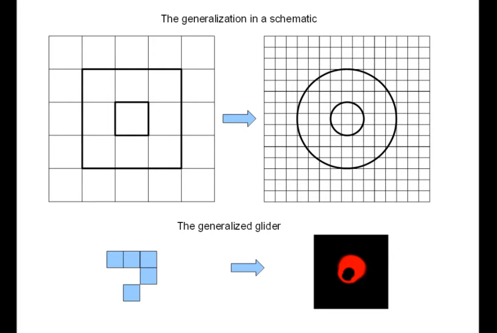

This was a tricky assignment for me. I wasn’t sure on which direction to go so I just decided to give Langton’s Ants a try after waiting too long. I converted the older Game of Life assignment to the modularized format and tried simulating the ant with the fragment shader but I just couldn’t visualize the flip and turn actions. I already had a Game of Life skeleton code, so I ditched the ant and looked for documentation about Smooth Life. It was intimidating but here is some documentation that helped me a lot.
Conway's Game of Life for Curved Surfaces
I also want to thank Kai Yan because the video he shared from Slack was very helpful. The video explains taking the square grid and applying the Game of Life grid process to curves. Checking the radius range for these two circles (see the image above) and calculating these values give us the parameters (M,N) needed to use the sigmoid transition function to create a smooth approximation of Game of Life rules. That is also why, to create the similar effect, the recommended ratio of outer circle to inner circle radius is 3:1.

I tried 3/9 and 9/27 for the radius values. 9/27 was nicer because clusters were larger but my little GPU could not handle it. At the initial state, there is usually only one or two small clusters. The documentation I found had different birth and death ranges for ideal values but the documented values produced frequent small clusters that died quickly. I played with the numbers to get larger shapes while also not occupying the entire space when they reach equilibrium. At the peak, the cells reach equilibrium and cover almost the entire screen. My older assignments with Game of Life had a green theme so, aesthetically, I tried to stay consistent with that. The current simulation looks like the green version of the Smooth Life example video we saw in class. If I had time, I would probably add RGB GUI for interactivity.
I reused the webGL code from the diffusion mini-assignment for the framebuffer pingpong but even when I looped pingpong with 4 or 5, my GPU struggled to render. I also almost fried my Mac when it shut down after I set the loop to 30 by accident. (yikes!)
Cem really liked the animation. At first he couldn't tell it was Game of Life but then I explained what Smooth Life is. I had previously showed him my Game of Life pattern so the consistency of color was nice for him as well.